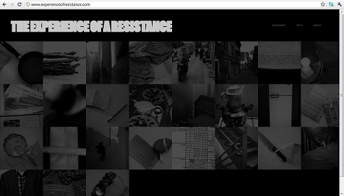
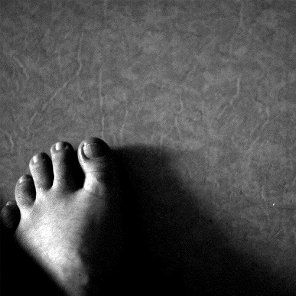
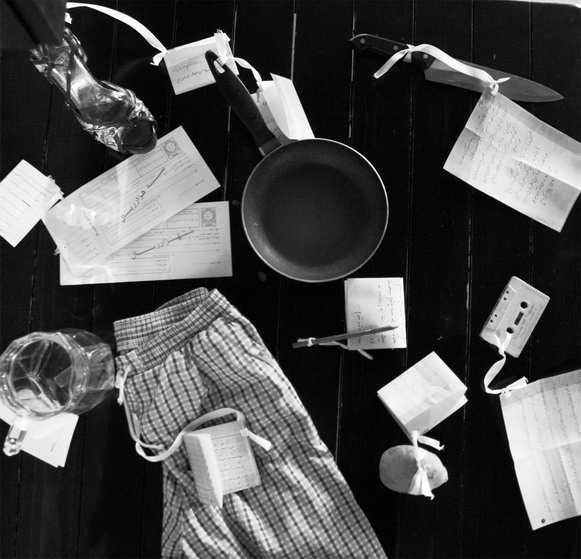
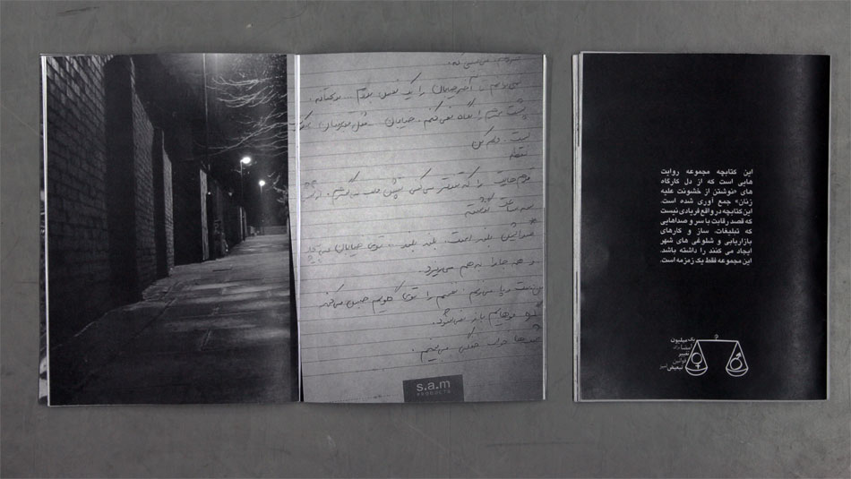
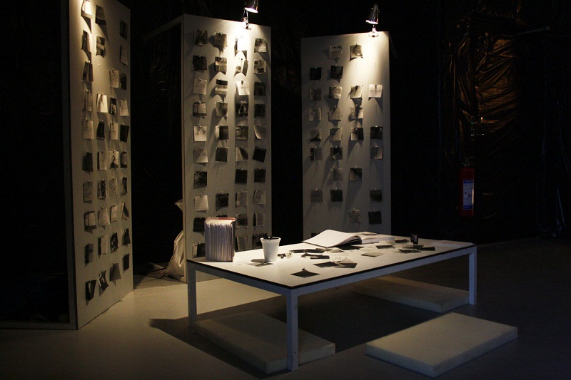
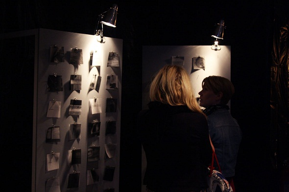
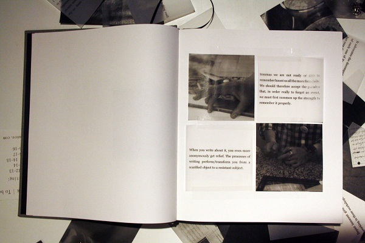
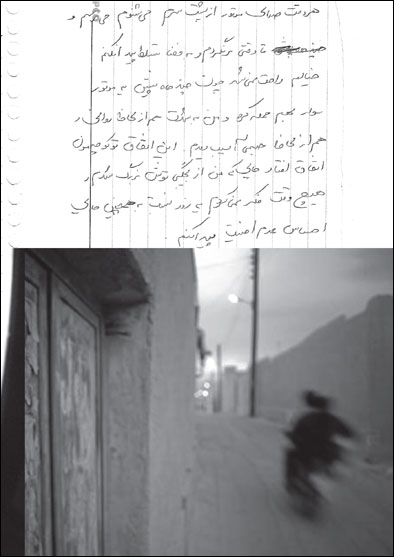

پذيرش > تریبون > گزارش كمپين > شیوه های ایستادگی


 شیوه های ایستادگی شیوه های ایستادگی
24 خرداد 1390 - ترجمه: سیمین رادمنش - نسخه قابل چاپ
تغییر برای برابری: آذرماه 1389 ، در آستانه روز جهانی مبارزه با خشونت علیه زنان ، اعضای کمپین یک میلیون امضا در چند شهر ایران کارگاه مبارزه با خشونت خانگی را برگزار کردند و در این کارگاه ها شرکت کننده را به نوشتن روایت خود درباره خشونت تشویق کردند. از زنان شرکت کننده در این کارگاه خواسته شده بود تصویر و یا شئی را که برای آنان یادآور یکی از تجربه های خشونت است، همراه خود بیاورند و درباره آن بنویسند. خروجی این کارگاه ها انتشار یک دفترچه (1) و برگزاری یک نمایشگاهِ (2) دو روزه همزمان با 25 نوامبر، روز جهانی مقابله با خشونت علیه زنان و سپس راه اندازی یک آرشیو آنلاین در 8 مارس 2011 (1389) با نام تجربه ایستادگی (3) بود. راه اندازی شد که اخبار و گزارش های آنها نیز در سایت تغییر برای برابری منتشر شد. این فعالیت ها در واقع بخشی از پروژه ای بود با عنوان شیوه های ایستادگی که جزئیات آن در زیر آمده است.

«شیوه های ایستادگی»، عنوان پژوهشی تجربي بر اساس رساله ی دانشجوی ایرانی محمود کشاورز در گروه طراحي تجربه دانشگاه هنرو طراحی كنستفك در استکهلم سوئد است. این پژوهش طی سال گذشته و با صورت بندی سه پرسش اساسی شکل گرفته است که طی آن نقش طراح را در مداخلات اجتماعي و سياسي مورد بررسی قرار می دهد:
1.طراح/پژوهشگر در مراحل مختلف پژوهش های کنش گرایی که در حوزه ی سیاسی، اجتماعی به کار گرفته می شود چه كسي می تواند باشد؟
2. او چگونه مي تواند با فاصله گرفتن از منبع دانش طراحي اش، در جهت توسعه ی یک «دانش وضعیت گرا» حرکت کند؟ دانشی که بتواند طراحی را برای ایستادگی و رهایی در یک وضعیت خاص دوباره شکل دهد و یا موقعیت یابی کند.
3. چگونه اشکالِ سیاسی تجربه از طریق موقعیت ها، اجراها و یا دگرگونی ها ی متعدد می تواند از نو بازتوزیع شود؟
شیوه های ایستادگی سعی در توسعه ی رویکردی در طراحی دارد که هم انتقادی و هم جست و جوگر است. با استفاده از چهارچوب های تحلیلی و شیوه های پژوهش کنش گرا، این پروژه از طریق یک همکاری «بدون رشته ای» با گروه هایی از فعالان زن در ایران و سوئد بر روی موضوع خشونت خانگی، عمومی، فیزیکی و دولتی متمرکز است.

بعلاوه، این پروژه می کوشد از طریق يك «سیاست ترجمه»، نوعي مقاومت شخصي در برابر این انتظار همیشگی را ایجاد کند كه از پژوهشگر می خواهد چنين موضوعاتي را به تصوير بكشد و يا پژوهش اش را در سیستم معنادار «زیبایی شناسی طراحی» قابل درک سازد. مقاومتی علیه فرآیند معناسازی كه اغلب ممكن است با ساختار های اجتماعي سركوبگری همدست شود که پیشتر دست به حذف گروه هایی از جامعه زده اند.
پروژه ي «شیوه های ایستادگی» مشاركتی است با کمپین یک میلیون امضا برای تغییر قوانین تبعیض آمیز با شعار «تغيير براي برابري» ، كمپين« آیا من يك زن نيستم» و واحد تحقيقات طراحي ِ اینتراکتیو انستیتو.
کمپین یک میلیون امضا... یا خلاصه تر کمپین تغییر برای برابری

یك ماه همكاري نزديك با فعالان کمپین یک میلیون امضا در ايران منجر به تجربه هاي گوناگوني از جمله : تشکیل كارگاه هاي آموزشي، نمايشگاه، جزوات تكثير شده، مداخلات شهري ویک آرشیو زنده ی آنلاين شد.
گروهي از فعالان زن متشكل از 13 نفر، سه كارگاه در شهرهاي مختلف برپا كردند. در كارگاه هاي آموزشي - كه براي نوشتن از خشونت در برابر خشونت سازماندهي شده بودند – حدود نود داستان و روايت جمع آوري شد كه در هركدام آن ها تجارب شخصي روزانه ي افراد از خشونت در يك جامعه ي پلیسی را به تصوير كشيده شده بودند. تمام روايت ها مبتني بر يك شيء، تصوير و يا فضايي است كه يادآور تجربه ي شركت كنندگان از خشونت يا ایستادگی آن ها در برابر خشونت است.

در 8 مارس 2011 آرشيو پویایی از تجربه های روایت شده در شکل کلمات و تصاویر با عنوان «تجربه ي ایستادگی»، راه اندازي شد. کل بخش اول این پروژه – همکاری با کمپین یک میلیون امضا ( تغییر برای برابری)، بیان گر مشارکت بالای زنان در نقاط مختلف دنیا است.از حدود 100 نفر زنان شركت كننده در كارگاه ها، 20 نفر از زنان کنش گر و 20 نفر از زناني كه كه داستان ها را به زبان انگليسي براي آرشيو آنلاين روايت كرده اند، همچنین زنان دیگری که داستان هایشان را به شیوه ی آنلاین برای وب سایت پروژه فرستاده اند، همگی در به اشتراک گذاردن تجربه ی ایستادگی در برابر خشونت و خلق این فضای اشتراکی سهیم بوده اند.
آیا من یک زن نیستم؟

بخش دوم این پژوهش با پيوستن به يك گروه از فعالان زن در گوتنبرگ سوئد به نام كمپين " آیا من یک زن نيستم" گره خورده است جایی که پژوهشگر اين پروژه سعي در ديدن جنبه هايي ديگر از ایستادگی در جوامع به اصطلاح دموكراتيك دارد. جوامعي كه در آن ها "زنان بدون اوراق هویت" دارای هيچ حقي براي محافظت در برابر انواع خشونت نیستند.

در روند این پژوهش، فرآیند مستند سازي يكي از زنان بدون اوراق هویت توسط خود وی آغاز شد. او با گرفتن عكس، نوشتن و جمع آوري اشیایی از زندگی روزمره خود درصدد مستند سازی حیاتی برآمده است که فاقد سند و اوراق رسمی است. "حیات برهنه" ای که توسط یک جامعه ی پلیسی به او تحمیل شده است. تمام متریال ها ی جمع آوری شده و مستند شده توسط اوبه شکل یک کتاب جیبی تهیه شده است، کتابی که به راحتی می تواند به مکان هایی سفر کند که برای خود او ممکن نیست .
کتاب اشتراکی

قسمت ديگري از اين تحقيق به جلسات تالیف اشتراکی یک کتاب در نمايشگاهي در دانشگاه "كنستفك" در استكهلم اختصاص داده شد. افراد دعوت شده به همكاري در این بخش که در نمايشگاهی كه از نوزدهم تا بيست و نهم مي 2011 ، درزمان نمايش بهاره ي "كنستفك" برگزار شد، در طول پنج جلسه گرد هم آمدند تا از متریال هایی شامل تصاویر و متونی که در اختیار آن ها قرار داده شده بودکتابی تالیف کنند. تمام اين تصاویر و متون که در طول يك سال تحقيق از مي 2010 تا زمان برگزاری نمایشگاه جمع آوري شده اند در حقيقت نسخه هاي ترجمه شدهاي از دستنوشته ها و تصاوير و مواد خامي هستند كه كه در سه بخش پیشین پروژه ارائه داده شده بودند.
اين جلسات در واقع با هدف جاگذاری دوباره تصاویر و متونی که مشخصا ارتباطی با هم ندارند اما در یک ساختار، خلق و جمع آوری شده اند می کوشد که نقدی علیه بازتولید تصویر همیشگی قربانی باشد. این کتاب در واقع نقطه ای اتصال تماشاگر با خالق مواد است، جایی که تماشاگر خود همچون خالق مواد به چهره ای مقاوم علیه خشونت تبدیل می شود و از طریق درگیر کردن تجربه ی شخصی خود به تجربه ای که می بیند، شیوه ی دیگری از ایستادگی می آفریند.

محمود كشاورز پژوهشگری در رشته ي طراحي است كه در زمينه ي طراحي مرتبط با سياست فعاليت مي كند. او مدرك كارشناسي خود را در رشته ي طراحي صنعتي از دانشگاه آزاد تهران گرفته است و در حال حاضر در حال اتمام كارشناسي ارشد خود در گروه طراحي تجربه در دانشگاه هنر، صنايع دستي و طراحي كنستفك در شهر استكهلم سوئد است، جایی که بر روي پروژه ي تحقيقاتي ِ شیوه های ایستادگی كار كرده است. از او مقالات متعددي در مجلات و روزنامه هاي مختلف در ايران و همايش هاي بين المللي منتشر شده است. وي همچنين با مجله ي اينترنتي طراحي فلسفه سياست همكاري داشته است و اخيرا به بخش پژوهش طراحي اینتراکتیو اینستیتیو پيوسته، و در آن جا در حال كار بر روي شیوه های اجرایی گفتمان های انتقادي و سياسي در طراحی است.
مطالب برگرفته از وب سایت تجربه ایستادگی است. آدرس وب سایت: www.formsofresistance.com
پی نوشت:
1.کارگاه های مقابله با خشونت و کتابچه روایت های زنانه
2. چشمها گاهی بهتر می شنوند
3. آغاز به کار وبسایت " تجربه ایستادگی" هم زمان با صدمین سالگرد هشت مارس
ارسال به
بالاترین
،
توییتر
،
فریندفید
،
فیسبوک
در همين بخش :
 دهمین دورۀ مراسم تندیس صدیقه دولت آبادی ۱۳۹۲ دهمین دورۀ مراسم تندیس صدیقه دولت آبادی ۱۳۹۲
کارت پستالهایی به بهانهی هشت مارس و به یاد همهی مبارزین راه برابری
بیانیه بیش از 350 تن از مدافعان حقوق زنان به مناسبت روز جهانی زن؛ زنان هر روز فرودستتر میشوند
لباسی که برای تن ما دوخته اند! /اعظم بهرامی
چالشها و چشمانداز فعالیت مدنی زنان
ديگر بخش ها :
طرح یک میلیون امضا
|
مقالات
|
سایت نوشته ها
|
اخبار
|
گزارش كمپين
|
گفت و گو
|
علیه سکوت
|
كوچه به كوچه
|
نامه های شما
|
گزارش ویژه
|
گفتگو با اعضا
|
ویژه سالگرد کمپین
|
تصویر برابری
|
دل آرام علی
|
تریبون
|
مقالات
|
تاریخ شفاهی
|
خارج از چارچوب
|
کتابخانه
|
درباره کمپین
|
کمپین در شهرها
|
کمپین در بند
|
صدای تغییر
|
ویژه 22 خرداد
|
لایحه حمایت از خانواده
|
گالری
|
عشا مومنی
|
امیر یعقوبعلی
|
خدیجه مقدم
|
راحله عسگری زاده و نسیم خسروی
|
پروین اردلان،جلوه جواهری، مریم حسین خواه، ناهید کشاورز
|
زینب پیغمبرزاده
|
سعیده امین، سارا ایمانیان، محبوبه حسین زاده، ناهید کشاورز و همایون نامی
|
احترام شادفر
|
نسیم سرابندی زاده،فاطمه دهدشتی
|
وبلاگ مهمان
|
پرونده خرم آباد
|
دستگیری ها
|
مریم مالک
|
پرستو اللهیاری
|
مهرنوش اعتمادی
|
سمیه رشیدی
|
Other Languages
|
همراهان
|
«فراخوان کمپین ده روز با بهاره هدایت»
| English
|